Business Forecasting
Week 10 forecast the arrival delay at Mexico City airport, flights$arr_delay, from two numbers: the departure delay and the scheduled flight time.
flights$carrier adds who flies the plane. It has three categories:
flights$carrier |
Airlines in the category |
|---|---|
| “Domestic” | the Mexican airlines: Aeroméxico, Volaris, Viva Aerobus, Magnicharters, Mas |
| “US” | the US airlines: United, American, Delta, FedEx |
| “Other foreign” | the other 20 foreign airlines: Avianca, Copa, Air Canada, LATAM, Iberia, Air France, Lufthansa… |
The category is the airline’s country, not the route: an Aeroméxico flight from Los Angeles is “Domestic”.
A 0/1 regressor has two categories. flights$carrier has three; flights$weekday has seven. Can a regressor with several categories make the forecast of the arrival delay more accurate? A smaller miss means better plans for gates and ground crews.
One variable, three groups: what lm() does with it, and how to read the result.
Which group of airlines has the highest mean arrival delay? Which has the lowest? How many minutes apart are they?
flights$arr_delay for each of the three values of flights$carrier.mean(flights$arr_delay[flights$carrier == "US"]) is the mean for the US airlines.
Domestic flights land earliest, 15.3 minutes before schedule on average. US flights land latest, only 8.1 minutes early: 7.2 minutes later than Domestic flights.
lm() accepts a text column as a regressor. What do its coefficients mean?
flights$arr_delay on flights$carrier.carrierUS with the gap between the US mean and the Domestic mean.Two categories, as in week 10: one 0/1 column, a dummy, is enough. flights$intl is 1 for a flight from abroad and 0 for a flight from Mexico, like dayoff for Ecobici.
flights$carrier has three categories, and one 0/1 column cannot tell three groups apart. So we need several dummies: one per category, 1 if the flight is in that category and 0 if not. lm() builds them automatically.
\[{\color{#e67e22}{\text{domestic}_i}} = \begin{cases} 1 & \text{if carrier}_i = \text{“Domestic”} \\ 0 & \text{otherwise} \end{cases}\]
\[{\color{#1b7a3d}{\text{other}_i}} = \begin{cases} 1 & \text{if carrier}_i = \text{“Other foreign”} \\ 0 & \text{otherwise} \end{cases}\]
\[{\color{#8e44ad}{\text{us}_i}} = \begin{cases} 1 & \text{if carrier}_i = \text{“US”} \\ 0 & \text{otherwise} \end{cases}\]
| Flight | carrier |
domestic | other | us |
|---|---|---|---|---|
| Aeroméxico from Cancún | "Domestic" | 1 | 0 | 0 |
| United from Houston | "US" | 0 | 0 | 1 |
| Avianca from Bogotá | "Other foreign" | 0 | 1 | 0 |
| Volaris from Tijuana | "Domestic" | 1 | 0 | 0 |
intl = 0. In the same way, summary() in Exercise 2 printed two dummies, not three: lm() left domestic out.Each flight belongs to exactly one group, so the three dummies always add up to 1: \(\ \cssId{mt-dsum}{\text{domestic}_i + \text{other}_i + \text{us}_i} = \cssId{mt-one}{1}\).
\(\displaystyle \mathbf{X} = \begin{bmatrix} {\color{#2471a3}{1}} & {\color{#e67e22}{1}} & {\color{#aaaaaa}{0}} & {\color{#aaaaaa}{0}} \\ {\color{#2471a3}{1}} & {\color{#aaaaaa}{0}} & {\color{#aaaaaa}{0}} & {\color{#8e44ad}{1}} \\ {\color{#2471a3}{1}} & {\color{#aaaaaa}{0}} & {\color{#1b7a3d}{1}} & {\color{#aaaaaa}{0}} \\ {\color{#2471a3}{1}} & {\color{#e67e22}{1}} & {\color{#aaaaaa}{0}} & {\color{#aaaaaa}{0}} \end{bmatrix} \begin{matrix} \text{Aeroméxico from Cancún} \\ \text{United from Houston} \\ \text{Avianca from Bogotá} \\ \text{Volaris from Tijuana} \end{matrix}\)
Four flights, all three dummies Columns: the 1s for the intercept, then domestic, other, us.
\(\displaystyle {\color{#e67e22}{\text{domestic}}} + {\color{#1b7a3d}{\text{other}}} + {\color{#8e44ad}{\text{us}}} = \begin{bmatrix} {\color{#e67e22}{1}} + 0 + 0 \\ 0 + 0 + {\color{#8e44ad}{1}} \\ 0 + {\color{#1b7a3d}{1}} + 0 \\ {\color{#e67e22}{1}} + 0 + 0 \end{bmatrix} = \boxed{\begin{bmatrix} {\color{#2471a3}{1}} \\ {\color{#2471a3}{1}} \\ {\color{#2471a3}{1}} \\ {\color{#2471a3}{1}} \end{bmatrix}}\)
Add the three dummy columns In each row exactly one dummy is 1. The sum is the blue column, flight by flight.
The column of 1s for the intercept is already in \(\mathbf{X}\). What happens if all three dummies go in with it?
The column of 1s is then the sum of three other columns: \(\mathbf{X}\) is not full rank (week 10). R drops one category automatically to avoid this; the one dropped is the category with no coefficient in summary(). Try it in R
With \(m\) categories: \(m - 1\) dummies, so \(m - 1\) coefficients. The category left out is in the intercept.
The category left out is the reference category. R takes the first in alphabetical order, “Domestic”, so the regression has dummies for the other two. \(\hat y\) is the predicted arr_delay:
\(\displaystyle \hat y_{\rlap{i}\phantom{\text{Other foreign}}} = b_0 + b_1 \times \text{other}_i + b_2 \times \text{us}_i\)
\(\displaystyle \hat y_{\rlap{\text{Domestic}}\phantom{\text{Other foreign}}} = b_0 + b_1 \times \overset{\hphantom{\text{other}_i}}{0} + b_2 \times \overset{\hphantom{\text{us}_i}}{0} = {\color{#2471a3}{b_0}}\)
A Domestic flight: every dummy is 0 Only the intercept is left. \(b_0\) is the mean delay of Domestic flights, the reference.
\(\displaystyle \hat y_{\text{Other foreign}} = b_0 + {\color{#1b7a3d}{b_1}} \times \overset{\hphantom{\text{other}_i}}{1} + b_2 \times \overset{\hphantom{\text{us}_i}}{0} = b_0 + {\color{#1b7a3d}{b_1}}\)
An Other foreign flight: other = 1 \(b_1 = \hat y_{\text{Other foreign}} - \hat y_{\text{Domestic}}\): the gap in mean delay between Other foreign and Domestic flights.
\(\displaystyle \hat y_{\rlap{\text{US}}\phantom{\text{Other foreign}}} = b_0 + b_1 \times \overset{\hphantom{\text{other}_i}}{0} + {\color{#8e44ad}{b_2}} \times \overset{\hphantom{\text{us}_i}}{1} = b_0 + {\color{#8e44ad}{b_2}}\)
A US flight: us = 1 \(b_2 = \hat y_{\text{US}} - \hat y_{\text{Domestic}}\): the gap in mean delay between US and Domestic flights.
The intercept is the mean of the reference category. Each coefficient is the gap between its category and the reference.
The fitted line of Exercise 2:
\(\displaystyle \hat y_{\rlap{i}\phantom{\text{Other foreign}}} = \overset{\hphantom{-15.30}}{\cssId{mt-c0}{b_0}} + \overset{\hphantom{5.74}}{\cssId{mt-c1}{b_1}} \times \text{other}_i + \overset{\hphantom{7.22}}{\cssId{mt-c2}{b_2}} \times \text{us}_i\)
\(\displaystyle \hat y_{\rlap{i}\phantom{\text{Other foreign}}} = {\color{#2471a3}{-15.30}} + {\color{#1b7a3d}{5.74}} \times \text{other}_i + {\color{#8e44ad}{7.22}} \times \text{us}_i\)
\(\displaystyle \hat y_{\rlap{\text{Domestic}}\phantom{\text{Other foreign}}} = \underbrace{{\color{#2471a3}{-15.30}}}_{b_0} + \underbrace{5.74}_{b_1} \times \overset{\hphantom{\text{other}_i}}{\underbrace{0}_{\text{other}}} + \underbrace{7.22}_{b_2} \times \overset{\hphantom{\text{us}_i}}{\underbrace{0}_{\text{us}}} = {\color{#2471a3}{-15.30}}\)
A Domestic flight: every dummy is 0 Only the intercept is left. \(b_0\) is the predicted delay of a Domestic flight: the Domestic mean.
\(\displaystyle \hat y_{\text{Other foreign}} = \underbrace{{\color{#2471a3}{-15.30}}}_{b_0} + \underbrace{{\color{#1b7a3d}{5.74}}}_{b_1} \times \overset{\hphantom{\text{other}_i}}{\underbrace{1}_{\text{other}}} + \underbrace{7.22}_{b_2} \times \overset{\hphantom{\text{us}_i}}{\underbrace{0}_{\text{us}}} = -9.56\)
An Other foreign flight: other = 1 \(b_1\) is the gap to the reference: Other foreign flights land 5.74 minutes later than Domestic flights.
\(\displaystyle \hat y_{\rlap{\text{US}}\phantom{\text{Other foreign}}} = \underbrace{{\color{#2471a3}{-15.30}}}_{b_0} + \underbrace{5.74}_{b_1} \times \overset{\hphantom{\text{other}_i}}{\underbrace{0}_{\text{other}}} + \underbrace{{\color{#8e44ad}{7.22}}}_{b_2} \times \overset{\hphantom{\text{us}_i}}{\underbrace{1}_{\text{us}}} = -8.08\)
A US flight: us = 1 \(b_2\) is the gap to the reference: US flights land 7.22 minutes later than Domestic flights.
\[\hat y_i = b_0 + b_1\,\text{other}_i + b_2\,\text{us}_i\]
Each coefficient compares one group with the reference. A coefficient of 0 means no gap.
\(b_2 = 0: \quad \hat y_{\text{US}} = b_0 + b_1 \times 0 + {\color{#8e44ad}{0}} \times 1 = b_0 = \hat y_{\text{Domestic}}\)
US = Domestic A US flight gets the same prediction as a Domestic flight: on average they land equally late.
\(\hat y_{\text{US}} - \hat y_{\text{Other foreign}} = (b_0 + b_2) - (b_0 + b_1) = b_2 - b_1\)
Only against the reference \(b_2 = 0\) says nothing about US against Other foreign. That gap is \(b_2 - b_1\).
\(b_1 = b_2 = 0: \quad \hat y_{\text{Domestic}} = \hat y_{\text{Other foreign}} = \hat y_{\text{US}} = b_0\)
The category does not matter All three groups have the same mean, so the category does not help the forecast.
\(b_0 = 0: \quad \hat y_{\text{Domestic}} = 0\)
The intercept Domestic flights land on time on average. It says nothing about the gaps.
In data an estimate is never exactly 0: here \(\hat b_1 = 5.74\) and \(\hat b_2 = 7.22\). Next week: is an estimate far enough from 0 to say that the groups differ?
The same reading three more times: six airlines, eight careers, thirteen store chains.
flights6 keeps the flights of the six airlines with the most flights (91% of the flights). flights6$airline holds the airline’s name.
flights6$arr_delay on flights6$airline. How many categories are there? How many dummies? Which airline is the reference category?The reference category has no row of its own in summary(). Add a coefficient to the intercept to get the mean of that airline.
Six categories, five dummies; the reference is Aeroméxico, first in alphabetical order. An Aeroméxico flight: -20.00 minutes. Volaris: -20.00 + 12.51 = -7.48 minutes. United lands 5.84 minutes later than Delta: 13.67 − 7.83. Viva Aerobus lands latest, 16.92 minutes after Aeroméxico; Aeroméxico lands earliest.
The output of Exercise 3: six categories, five dummies. The reference is Aeroméxico, first in alphabetical order.
| Row of summary() | Estimate | Airline mean |
|---|---|---|
| (Intercept) | -20.0 | -20.0 |
| airlineAmerican Airlines | 12.9 | -7.1 |
| airlineDelta Air Lines | 7.8 | -12.2 |
| airlineUnited Airlines | 13.7 | -6.3 |
| airlineViva Aerobus | 16.9 | -3.1 |
| airlineVolaris | 12.5 | -7.5 |
What is the mean arrival delay of an Aeroméxico flight?
The intercept -20.0 minutes: for Aeroméxico every dummy is 0.
Read the coefficient on Volaris.
A gap to the reference A Volaris flight lands 12.5 minutes later than an Aeroméxico flight: \(-20.0 + 12.5 = -7.5\) minutes.
Which lands later, Delta or United? By how many minutes?
Two gaps to the same reference United, by \(13.7 - 7.8 = 5.9\) minutes. The intercept cancels: \((\hat b_0 + 13.7) - (\hat b_0 + 7.8)\).
Which airline lands latest? Which earliest?
The largest and the smallest coefficient Viva Aerobus lands latest, 16.9 minutes after Aeroméxico. Aeroméxico lands earliest: every coefficient is positive.
careers holds 10,541 people right after graduating, from the ENOE (INEGI), 2018 to 2022, in eight professional occupations. careers$career is the job the person does, not the degree.
careers$career |
Occupations in the category |
|---|---|
| “Accounting and finance” | accountants, auditors, financial analysts, economists |
| “Business and marketing” | administrators, human resources, marketing, tourism |
| “Doctors” | general practitioners, medical specialists, dentists |
| “Engineering and architecture” | civil, industrial, mechanical, chemical and mining engineers; architects |
| “Law and social sciences” | lawyers, political scientists, sociologists, historians |
| “Nursing” | nurses and medical technicians |
| “Software and IT” | software developers, database and network administrators |
| “Teaching” | high school and university teachers |
careers$income is monthly labour income, in pesos of 2022. Also: hours (worked last week), female (1 for women), age, year.
Source: INEGI, Encuesta Nacional de Ocupación y Empleo 2018–2022; workers with income between 0 and 100,000 pesos a month; incomes of 2018–2021 moved to 2022 pesos with INEGI’s consumer price index (INPC).
Which career has the highest mean income, and which the lowest? By how many pesos a month? For a student choosing a career, that gap is the price of the choice.
Eight categories, so seven dummies. “Accounting and finance”, first in alphabetical order, is the reference category: it gets no dummy, and its mean is in \(\beta_0\).
\[\begin{aligned} \text{income}_i = \ & \cssId{mt-q0}{\beta_0} + \beta_1\,\text{business}_i + \beta_2\,\text{doctors}_i + \beta_3\,\text{engineering}_i + \beta_4\,\text{law}_i \\ & + \beta_5\,\text{nursing}_i + \beta_6\,\text{software}_i + \beta_7\,\text{teaching}_i + u_i \end{aligned}\]
| career | business | doctors | engineering | law | nursing | software | teaching | income |
|---|---|---|---|---|---|---|---|---|
| Accounting and finance | 0 | 0 | 0 | 0 | 0 | 0 | 0 | 16,184 |
| Doctors | 0 | 1 | 0 | 0 | 0 | 0 | 0 | 1,222 |
| Software and IT | 0 | 0 | 0 | 0 | 0 | 1 | 0 | 12,948 |
lm(income ~ career, data = careers) builds the seven dummies for you.careers$income on careers$career. Which category is the reference?The intercept is the mean of the reference category. Add a coefficient to the intercept to get the mean of that career.
The reference is “Accounting and finance”, first in alphabetical order: a mean of 11,465 pesos a month, the intercept. Engineering and architecture pays the most, 2,368 pesos more than accounting and finance; nursing the least, 2,322 pesos less. A doctor: 11,465 + -1,613 = 9,852 pesos. A doctor against a teacher: -1,613 − (-2,108) = 495 pesos.
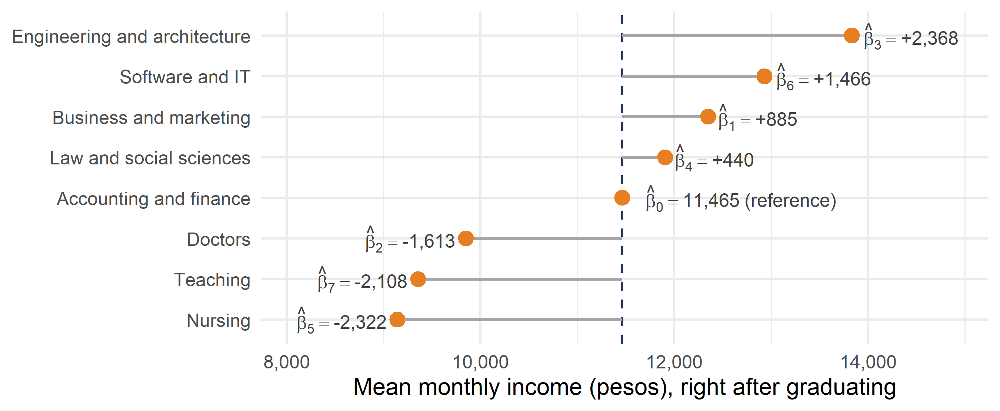
PROFECO inspectors record shelf prices in stores all over Mexico (“Quién es Quién en los Precios”, open data). drinks has 498 stores in 30 states, November 2025 to February 2026. One row is one item in one store in one month (the median of the visits).
| Column | What it is |
|---|---|
price |
shelf price, pesos |
litres, units |
litres in the pack; containers in it (1, 6 or 12) |
product, brand, diet |
soda, water or beer; the brand; 1 if a sugar-free soda |
format, chain, store |
store type; chain; the store |
local |
1 for a store outside the national chains: public markets, regional supermarkets, Neto, Circle K |
rivals_2km |
other stores of the PROFECO survey within 2 km |
income |
municipal labour income per person, thousand pesos a month |
month, after |
the month; after is 1 from January 2026 |
Sources: PROFECO, Quién es Quién en los Precios; INEGI, Encuesta Intercensal 2025.
coke keeps one product from drinks, the 355 ml can of Coca-Cola: 1,374 prices in 445 stores, November 2025 to February 2026. coke$chain is the chain of the store: 13 categories. “Other” groups the local stores outside the national chains.
Which chain has the lowest mean price for the can, and which the highest? By how many pesos? For a shopper, or for the bottler’s sales team, that gap is the price of the store.
coke$price on coke$chain. How many categories are there? How many dummies? Which chain is the reference category?The reference category has no row of its own in summary(). Add a coefficient to the intercept to get the mean of that chain.
13 categories, 12 dummies; the reference is 7-Eleven, first in alphabetical order, at 22.81 pesos. Superissste is the cheapest, 2.04 pesos less than 7-Eleven; pharmacies the dearest, 1.44 pesos more. Oxxo: 22.81 + 0.88 = 23.70 pesos. Oxxo against Walmart: 0.88 − (-1.03) = 1.91 pesos.
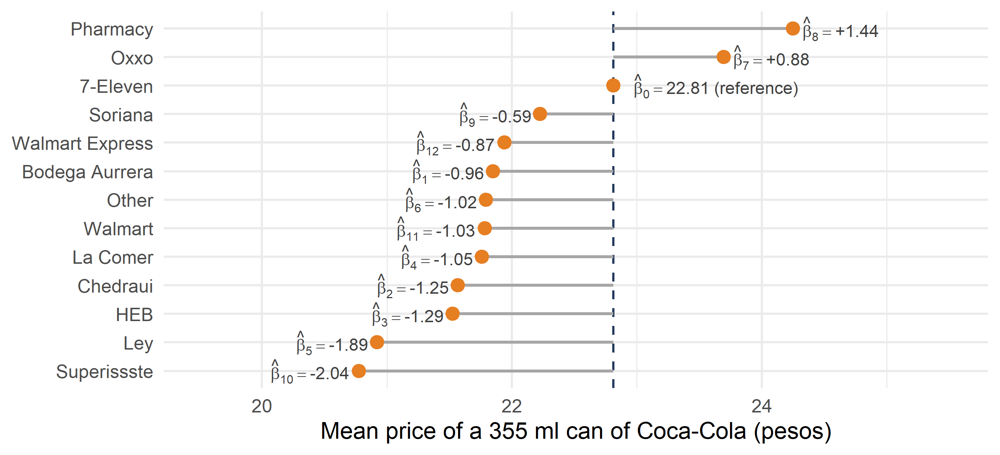
More on categories, in the appendix: Gaps with other regressors held fixed Does a category improve the forecast?
So far a category moved the line up or down. Now it can also change the slope.
A delivery app promises each customer a delivery time. Its couriers ride bicycles or motorbikes. For each delivery the app records the distance and the minutes it took.
Does one more kilometre add the same number of minutes on a bicycle and on a motorbike? Would we expect the same effect?
No. A motorbike covers each kilometre faster, so each extra kilometre should add fewer minutes.
The week 10 model, with a 0/1 regressor for motorbikes: \(\ \text{minutes}_i = \beta_0 + \beta_1\,\text{km}_i + \beta_2\,\text{moto}_i + u_i\)
Can we allow a different effect for each group? Yes: with an interaction.
The same deliveries, one line per group:
One distance column, km, gives one slope for everyone. For two slopes we need two distance columns: km for everyone, and a second one that only applies to motorbikes. It equals the distance for a motorbike and 0 for a bicycle.
\[\mathbf{X} = \begin{bmatrix} 1 & 5.9 & 0 & {\color{#e67e22}{0}} \\ 1 & 2.7 & 0 & {\color{#e67e22}{0}} \\ 1 & 1.1 & 0 & {\color{#e67e22}{0}} \\ 1 & 4.3 & 1 & {\color{#2471a3}{4.3}} \\ 1 & 5.3 & 1 & {\color{#2471a3}{5.3}} \\ 1 & 4.5 & 1 & {\color{#2471a3}{4.5}} \end{bmatrix} \begin{matrix} \text{bicycle} \\ \text{bicycle} \\ \text{bicycle} \\ \text{motorbike} \\ \text{motorbike} \\ \text{motorbike} \end{matrix}\]
Columns: the 1s for the intercept, km, moto, and the new column: the distance for a motorbike, 0 for a bicycle.
The new column is \(\text{km} \times \text{moto}\): the distance times the 0/1 regressor. The product of two regressors is called an interaction.
\[\text{minutes}_i = \cssId{mt-s0}{\beta_0} + \cssId{mt-s1}{\beta_1}\,\text{km}_i + \cssId{mt-s2}{\beta_2}\,\text{moto}_i + \cssId{mt-s3}{\beta_3}\,(\text{km}_i \times \text{moto}_i) + u_i\]
In R, two ways give the same coefficients:
deliveries$km_moto <- deliveries$km * deliveries$moto, then lm(minutes ~ km + moto + km_moto, data = deliveries).lm(minutes ~ km * moto, data = deliveries) adds km, moto and their product, which summary() calls km:moto.\(\displaystyle \text{minutes}_{\rlap{i}\phantom{\text{motorbike}}} = \beta_0 + \beta_1\,\text{km}_i + \beta_2 \times \text{moto}_i + \beta_3 \times \text{km}_i \times \text{moto}_i + u_i\)
\(\displaystyle \text{minutes}_{\rlap{\text{bicycle}}\phantom{\text{motorbike}}} = \beta_0 + \beta_1\,\text{km}_i + \beta_2 \times \overset{\hphantom{\text{moto}_i}}{{\color{#e67e22}{0}}} + \beta_3 \times \text{km}_i \times \overset{\hphantom{\text{moto}_i}}{{\color{#e67e22}{0}}} + u_i\)
\(\displaystyle \phantom{\text{minutes}_{\text{motorbike}}} = \boxed{\beta_0 + \beta_1\,\text{km}_i} + u_i\)
A bicycle: moto = 0 Both terms with moto drop out. The line starts at \(\beta_0\) and rises \(\beta_1\) minutes per kilometre.
\(\displaystyle \text{minutes}_{\rlap{\text{motorbike}}\phantom{\text{motorbike}}} = \beta_0 + \beta_1\,\text{km}_i + \beta_2 \times \overset{\hphantom{\text{moto}_i}}{{\color{#2471a3}{1}}} + \beta_3 \times \text{km}_i \times \overset{\hphantom{\text{moto}_i}}{{\color{#2471a3}{1}}} + u_i\)
\(\displaystyle \phantom{\text{minutes}_{\text{motorbike}}} = \boxed{(\beta_0 + \beta_2) + (\beta_1 + \beta_3)\,\text{km}_i} + u_i\)
A motorbike: moto = 1 \(\beta_2\) moves the start of the line; \(\beta_3\) changes its slope.
\(\displaystyle \widehat{\text{minutes}}_{\rlap{\text{bicycle}}\phantom{\text{motorbike}}} = {\color{#e67e22}{6.44 + 4.84\,\text{km}_i}}\)
\(\displaystyle \widehat{\text{minutes}}_{\rlap{\text{motorbike}}\phantom{\text{motorbike}}} = {\color{#2471a3}{(6.44 + 1.50) + (4.84 - 3.31)\,\text{km}_i}}\)
The OLS estimates The motorbike line: \(7.94 + 1.53\,\text{km}\).
The 0/1 regressor works as a switch: anything multiplied by moto is 0 for bicycles and only counts for motorbikes.
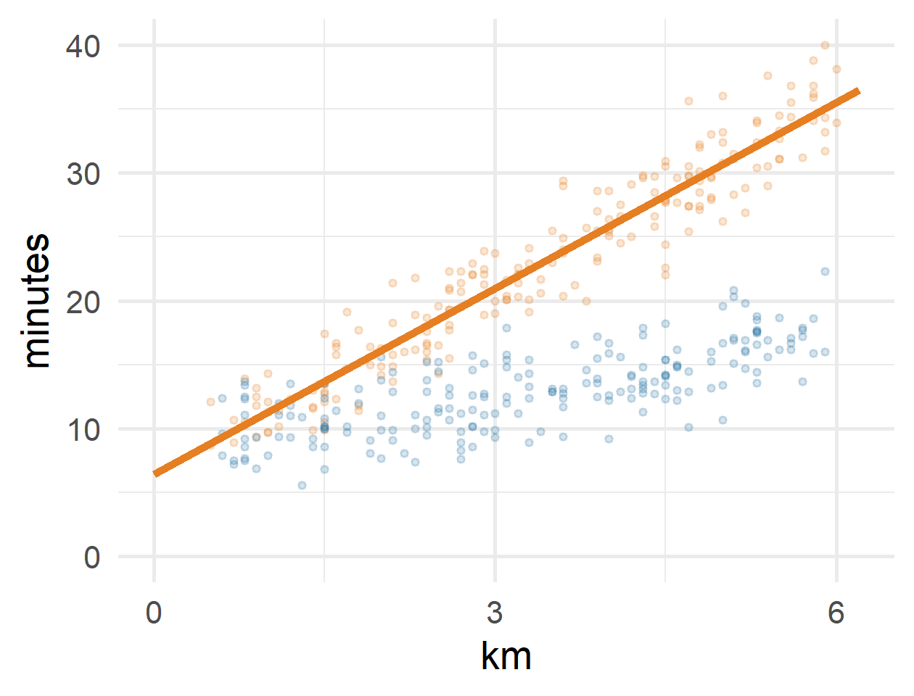
\(\beta_0 + \beta_1\,\text{km}\): one line, for bicycles
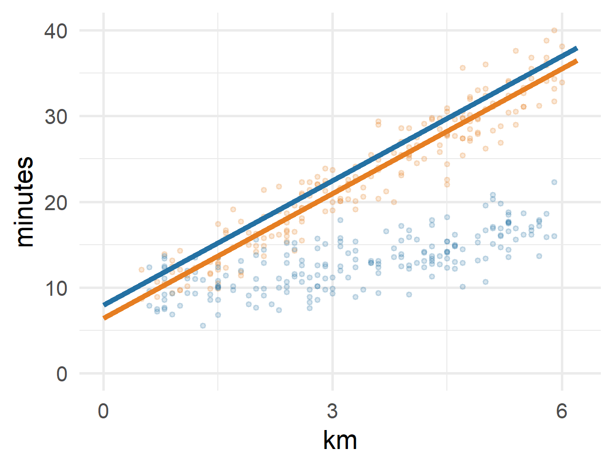
\(+\ \beta_2\,\text{moto}\): switched on for motorbikes, the line moves up
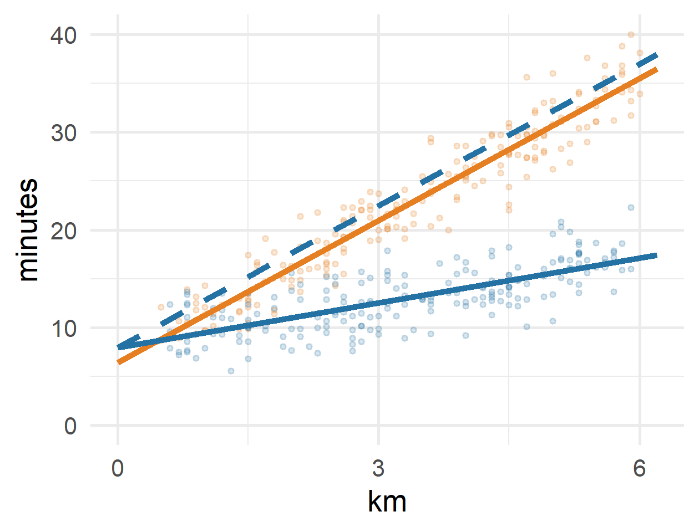
\(+\ \beta_3\,(\text{km} \times \text{moto})\): an extra slope, switched on for motorbikes, turns the line
deliveries holds 400 deliveries: deliveries$minutes, deliveries$km, and deliveries$moto, 1 for a motorbike and 0 for a bicycle.
minutes on km using the bicycle deliveries only. Then do the same using the motorbike deliveries only.deliveries$km_moto, the product of deliveries$km and deliveries$moto. Regress deliveries$minutes on km, moto and km_moto, using all deliveries.deliveries[deliveries$moto == 0, ] keeps the bicycle deliveries only.
reg_bike <- lm(minutes ~ km, data = deliveries[deliveries$moto == 0, ])
summary(reg_bike)
reg_moto <- lm(minutes ~ km, data = deliveries[deliveries$moto == 1, ])
summary(reg_moto)
deliveries$km_moto <- deliveries$km * deliveries$moto
reg <- lm(minutes ~ km + moto + km_moto, data = deliveries)
summary(reg)Bicycles: 6.44 + 4.84 km in both. Motorbikes: 6.44 + 1.50 = 7.94 at 0 km, and 4.84 − 3.31 = 1.53 minutes per km: the same line as the motorbike regression.
The output of Exercise 6, side by side:
| Separate regression | From the interaction | |
|---|---|---|
| Bicycles: start | 6.44 | \(\hat\beta_0 = 6.44\) |
| Bicycles: minutes per km | 4.84 | \(\hat\beta_1 = 4.84\) |
| Motorbikes: start | 7.94 | \(\hat\beta_0 + \hat\beta_2 = 6.44 + 1.50 = 7.94\) |
| Motorbikes: minutes per km | 1.53 | \(\hat\beta_1 + \hat\beta_3 = 4.84 - 3.31 = 1.53\) |
\[\widehat{\text{minutes}}_i = 6.44 + 4.84\,\text{km}_i + 1.50\,\text{moto}_i - 3.31\,(\text{km}_i \times \text{moto}_i)\]
A negative \(\hat\beta_3\) does not mean that a motorbike delivery gets shorter with distance. The motorbike slope is \(\hat\beta_1 + \hat\beta_3 = 4.84 - 3.31 = 1.53\) minutes per kilometre: still positive, just smaller than on a bicycle.
The gap between the groups depends on the distance: \(\hat\beta_2 + \hat\beta_3 \times \text{km}\). At 5 km it is \(1.50 - 3.31 \times 5 = -15.06\) minutes: the motorbike is 15.1 minutes faster.
\[\text{minutes}_i = \beta_0 + \beta_1\,\text{km}_i + \beta_2\,\text{moto}_i + \beta_3\,(\text{km}_i \times \text{moto}_i) + u_i\]
The lines if one coefficient were 0, the others at their estimates:
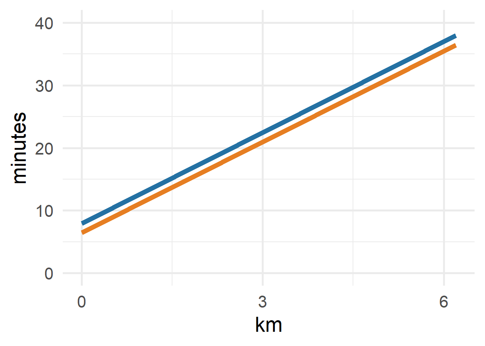
\({\color{#e67e22}{\text{bicycle: } \beta_0 + \beta_1\,\text{km}}}\)
\({\color{#2471a3}{\text{motorbike: } (\beta_0 + \beta_2) + \beta_1\,\text{km}}}\)
\(\beta_3 = 0\): the same slope for both, parallel lines. One more kilometre costs the same time on either vehicle.
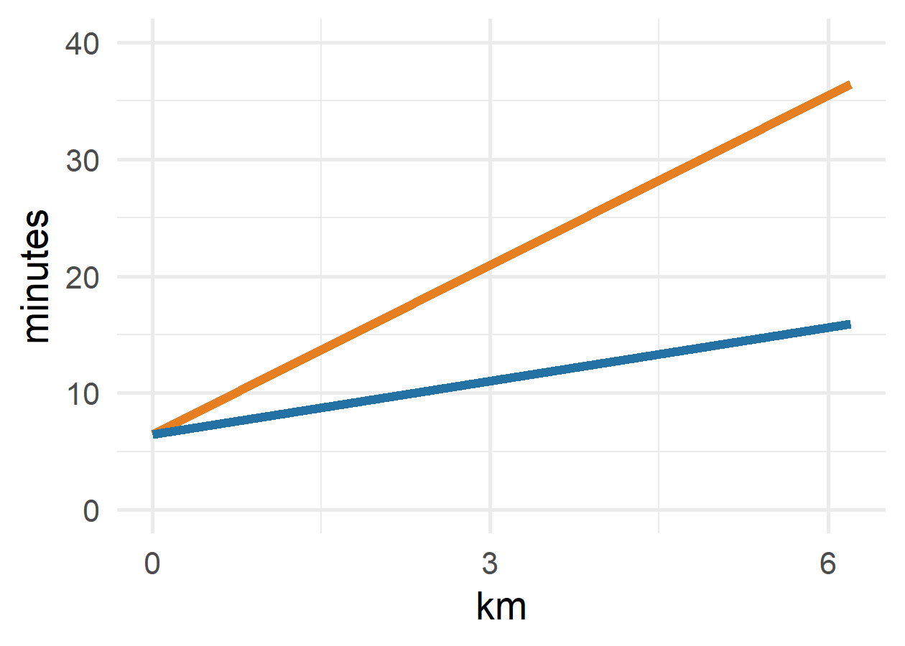
\({\color{#e67e22}{\text{bicycle: } \beta_0 + \beta_1\,\text{km}}}\)
\({\color{#2471a3}{\text{motorbike: } \beta_0 + (\beta_1 + \beta_3)\,\text{km}}}\)
\(\beta_2 = 0\): the same start at 0 km. The lines open out from one point.
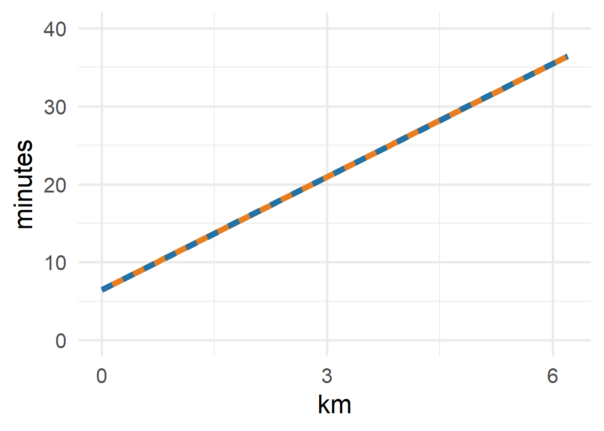
\({\color{#e67e22}{\text{bicycle: } \beta_0 + \beta_1\,\text{km}}}\)
\({\color{#2471a3}{\text{motorbike: } \beta_0 + \beta_1\,\text{km}}}\)
\(\beta_2 = \beta_3 = 0\): one line for both. The vehicle does not matter.
\(\beta_1 = 0\): distance does not matter for a bicycle, the reference group. The motorbike slope is then \(\beta_3\) alone. Whether \(\beta_3\) is 0 is the question of this section: the t-test on \(\hat\beta_3\) answers it.
The same model on real data: local competition, dating, and pay.
beer6 keeps one product from drinks, a six-pack of Dos Equis (six 355 ml bottles): 802 prices in 261 stores, November 2025 to February 2026.
beer6$rivals_2km counts the other stores of the PROFECO survey within 2 km.beer6$type has three categories: “supermarket” (a supermarket chain, 238 stores), “convenience” (a convenience chain such as Oxxo or 7-Eleven, 12 stores) and “local” (a store outside the national chains, 11 stores). beer6$local is 1 for a local store.Does one more store nearby change the price of the six-pack by the same number of pesos in all three types of store? Would we expect the same effect?
Probably not. A national chain, supermarket or convenience, sets its prices at head office, so the stores around one branch should barely matter. A local store sets its own price: alone, it can charge more; with rivals around, it must charge less.
Three categories: two dummies, conv and local, each with its own product with rivals. Supermarkets are the reference.
\[\text{price}_i = \cssId{mt-k0}{\beta_0} + \cssId{mt-k1}{\beta_1}\,\text{rivals}_i + \cssId{mt-k2}{\beta_2}\,\text{conv}_i + \cssId{mt-k3}{\beta_3}\,\text{local}_i + \cssId{mt-k4}{\beta_4}\,(\text{rivals}_i \times \text{conv}_i) + \cssId{mt-k5}{\beta_5}\,(\text{rivals}_i \times \text{local}_i) + u_i\]
| type | rivals_2km | conv | local | rivals_conv | rivals_local | price |
|---|---|---|---|---|---|---|
| supermarket | 0 | 0 | 0 | 0 | 0 | 112.0 |
| supermarket | 3 | 0 | 0 | 0 | 0 | 138.0 |
| convenience | 1 | 1 | 0 | 1 | 0 | 126.0 |
| convenience | 1 | 1 | 0 | 1 | 0 | 150.0 |
| local | 3 | 0 | 1 | 0 | 3 | 139.9 |
| local | 1 | 0 | 1 | 0 | 1 | 150.0 |
beer6$conv, 1 for a convenience store (beer6$type == "convenience"). Then create beer6$rivals_conv, the product of beer6$rivals_2km and beer6$conv, and beer6$rivals_local, the product of beer6$rivals_2km and beer6$local.beer6$price on rivals_2km, conv, local, rivals_conv and rivals_local.(beer6$type == "convenience") * 1 is 1 for a convenience store and 0 for the others.
Supermarket: -0.163 pesos per store nearby. Convenience store: -0.163 + 0.017 = -0.146 pesos. Local store: -0.163 + (-2.939) = -3.102 pesos. Only the local slope differs significantly from the supermarket slope (\(T = -3.82\)); the convenience slope does not (\(T = 0.04\)). With no store nearby, a local store charges 3.06 pesos more than a supermarket.
dating holds 544 ratings from 276 four-minute speed dates at Columbia University (Lock5Data: SpeedDating). After each date, each person rated from 1 to 10 how attractive they found their date, dating$attractive, and how much they liked them, dating$like. dating$female is 1 when the person rating is a woman.
Does one more point of attractiveness raise liking by the same amount when a man judges and when a woman judges?
\[\text{like}_i = \beta_0 + \beta_1\,\text{attractive}_i + \beta_2\,\text{female}_i + \beta_3\,(\text{attractive}_i \times \text{female}_i) + u_i\]
| attractive | female | attractive_female | like |
|---|---|---|---|
| 6 | 0 | 0 | 6 |
| 7 | 0 | 0 | 8 |
| 5 | 1 | 5 | 5 |
| 8 | 1 | 8 | 8 |
A man judging: \(\beta_0 + \beta_1\,\text{attractive}\). A woman judging: \((\beta_0 + \beta_2) + (\beta_1 + \beta_3)\,\text{attractive}\).
dating$attractive_female, the product of dating$attractive and dating$female.dating$like on dating$attractive, dating$female and dating$attractive_female.A man judging: 0.714 points of liking per point of attractiveness. A woman judging: 0.714 − 0.129 = 0.585. The difference is significant at 5% (\(T = -2.16\), p-value 0.031).
health holds the doctors and the nurses of all ages in the ENOE 2018–2022, income in pesos of 2022: 15,451 workers. Both regressors are 0/1: health$female, and health$doctor (1 for a doctor, 0 for a nurse).
Do women earn less than men by the same number of pesos among doctors and among nurses?
\[\text{income}_i = \cssId{mt-h0}{\beta_0} + \cssId{mt-h1}{\beta_1}\,\text{female}_i + \cssId{mt-h2}{\beta_2}\,\text{doctor}_i + \cssId{mt-h3}{\beta_3}\,(\text{female}_i \times \text{doctor}_i) + u_i\]
| Group | female |
doctor |
female_doctor |
Predicted income |
|---|---|---|---|---|
| man, nurse | 0 | 0 | 0 | \(\beta_0\) |
| woman, nurse | 1 | 0 | 0 | \(\beta_0 + \beta_1\) |
| man, doctor | 0 | 1 | 0 | \(\beta_0 + \beta_2\) |
| woman, doctor | 1 | 1 | 1 | \(\beta_0 + \beta_1 + \beta_2 + \beta_3\) |
health$doctor, 1 for "Doctors", and health$female_doctor, the product of health$female and health$doctor.health$income on health$female, health$doctor and health$female_doctor.mean().Male nurse 11,798; female nurse 10,730; male doctor 19,304; female doctor 16,789 pesos a month. The gap is 1,068 pesos among nurses and 2,515 among doctors. The difference, \(\hat\beta_3 = -1,447\), is significant at 5% (\(T = -4.46\)).
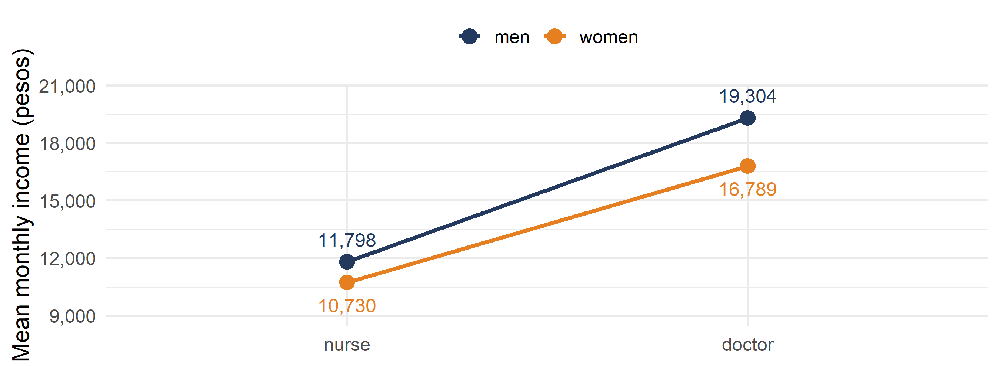
You can also multiply two continuous regressors, for example litres * income in a price regression. The slope on litres then changes smoothly with income. We will not use this case in class.
More examples in the appendix:
Soda and water: a litre in each Local stores and income Two groups, two periods: the 2026 soda tax
lm() turns a category into dummies, and why one category must be left out.Next week: inference with several regressors. Is the gap between two careers significant? Do the seven career dummies matter together? How sure are we of a forecast?
Weekly exercise set: W11_exercises.pdf, with solutions in W11_solutions.pdf.
You can already solve exercises 12 and 14, most of 8, 10 and 17, and 11 (b).
Not in these slides: 8 (f) and 9 use a 0/1 outcome, 9 (h) a squared regressor and 9 (i) standardized coefficients, which this course does not cover. 10 (d), 11 (a) and 16 compare two coefficients; 10 (h) and 11 (c) need intervals for a forecast; 11 (d)–(e), 13 and 15 test several coefficients at once or the assumptions: all week 12.
Suggested before the next class, closest to the exam:
| Exercise | Topic | How |
|---|---|---|
| 8 (a)–(e) | Inflation forecasts, financial literacy and a college degree (inflation_expectations) |
R with the data |
| 10 (a)–(c), (e)–(g) | Weekly pay, children and marital status (cps) |
R with the data |
| 12 | Reading an interaction of a 0/1 and a continuous regressor | By hand |
| 17 (a)–(d) | Hours, pay and the gender gap (ENOE) | R with the data |
Problems from this week’s set, and a question from the Spring 2026 final. ← Back to the summary · ← Back to Practice for this week
[P3 #8]
inflation holds 290 people in the United States, 2007–2008, from the probstats4econ package (inflation_expectations).
inflation$inflation_pred — the inflation they expect next year, percentage pointsinflation$age — age, yearsinflation$finlit_score — financial literacy score, out of 12inflation$collgrad — 1 for a college graduateinflation$famincome_hi — 1 if family income is above 75,000 dollarsRegress inflation_pred on the four regressors. Which slopes are significant at 5%?
Interpret the slope on finlit_score.
Interpret the slope on collgrad.
Draw a histogram of the fitted values.
Add the product of finlit_score and collgrad. What is the p-value of the interaction? What is the slope on finlit_score for a college graduate, and for someone without a degree?
reg <- lm(inflation_pred ~ age + finlit_score + collgrad + famincome_hi, data = inflation)
summary(reg)
hist(fitted(reg))
inflation$finlit_coll <- inflation$finlit_score * inflation$collgrad
reg_e <- lm(inflation_pred ~ age + finlit_score + collgrad + famincome_hi + finlit_coll,
data = inflation)
summary(reg_e)finlit_score (\(T = -5.76\)) and collgrad (\(T = -2.37\)).
With the rest fixed, one more point of financial literacy goes with a forecast 0.74 points lower.
With the rest fixed, college graduates expect 1.50 points less inflation.
The interaction is 0.724 with p-value 0.006. Without a degree, one more literacy point lowers the forecast by 0.977; for a graduate by \(-0.977 + 0.724 = -0.253\). Literacy matters much less for graduates.
[P3 #10]
cps holds 4,013 people aged 30 to 59 from the 2019 Current Population Survey (probstats4econ). cps$earnwk is pay last week, dollars; cps$gender is “Female” or “Male”; cps$ownchild the number of own children at home; cps$marstatus has four categories; cps$age and cps$educ are in years.
Regress earnwk on gender. Interpret the two coefficients.
Add ownchild. What happens to the coefficient on gender?
Create cps$female (1 for women) and its product with ownchild. Regress earnwk on female, ownchild and the product. Interpret the coefficients.
Drop the product and add marstatus, age and educ to the model of (b). What happened to the gender coefficient?
How many dummies does marstatus use? Why?
Interpret the coefficient on the Married dummy.
reg_a <- lm(earnwk ~ gender, data = cps)
summary(reg_a)
reg_b <- lm(earnwk ~ gender + ownchild, data = cps)
summary(reg_b)
cps$female <- (cps$gender == "Female") * 1
cps$female_child <- cps$female * cps$ownchild
reg_c <- lm(earnwk ~ female + ownchild + female_child, data = cps)
summary(reg_c)
reg_e <- lm(earnwk ~ gender + ownchild + marstatus + age + educ, data = cps)
summary(reg_e)Women earn 803.49 dollars a week on average (the base); men 313.81 more.
Almost nothing: 312.34. Children hardly differ between men and women.
For men, each child goes with 77.56 dollars more a week; for women with \(77.56 - 104.44 = -26.88\). With no children, women earn 232.38 less than men.
The gap grows to 349.65 dollars once marital status, age and education are held fixed.
Three: four categories, and Divorced (first in alphabetical order) is the base.
Married people earn 108.96 dollars a week more than divorced people of the same gender, children, age and education.
[P3 #12]
100 people recorded their weight loss \(w\) (kg) after three months. \(d = 1\) for those on a new diet; \(h\) is weekly hours of exercise. The fitted model is
\[\hat{w} = -1.4 + 7.2\,d + 1.5\,h + 3.4\,d h\]
Which statement is correct?
People who neither exercise nor follow the diet have a negative weight, which makes no sense.
People who follow the diet but do not exercise lose more than 5 kg.
For people not on the diet, one hour of exercise a week lowers weight by about 4.5 kg.
For people on the diet, one hour of exercise a week lowers weight by 10.7 kg.
[P3 #14]
A gym has three memberships: limited, full and luxury. Muscle gain after three months is regressed on membership dummies and an intercept. The ANOVA table shows a total of 256 degrees of freedom and sums of squares of 500 (regression) and 1,200 (total).
What are the regression degrees of freedom and the sample size?
[17]
w12 holds the 2,000 ENOE workers of 2022 drawn in the set (Canvas, 02 Data, ENOE_salaries.Rda): w12$Income (monthly pesos), w12$Hours_worked_lw (hours last week) and w12$Female (1 for women).
Regress Income on Hours_worked_lw and Female. Report the three coefficients and \(R^2\).
Interpret the coefficient on Female. What does this model assume about the slope on hours for the two groups?
Add the product of Hours_worked_lw and Female. Write the fitted line for men and for women.
Which group’s pay rises faster with hours?
Is the difference in slopes significant at 5%? At 10%?
Write two sentences for an HR director.
\(\widehat{\text{Income}} = 6{,}147.5 + 70.19\,\text{hours} - 1{,}111.3\,\text{Female}\), \(R^2 = 0.0488\).
Women earn 1,111 pesos a month less than men who work the same hours. The model gives both groups the same slope on hours.
Men: \(6{,}881.6 + 54.79\,\text{hours}\). Women: \((6{,}881.6 - 2{,}537.5) + (54.79 + 33.31)\,\text{hours} = 4{,}344.1 + 88.11\,\text{hours}\).
Women: 88.11 pesos a month per weekly hour, against 54.79 for men.
\(T = 1.88\), p-value 0.061: not significant at 5%, significant at 10%.
Women’s pay seems to rise faster with hours than men’s, so the gap is widest for part-time work. The evidence is weak: significant only at 10%, and \(R^2\) rises from 0.0488 to 0.0504.
[Spring 2026 final, Q13–Q18]
A Mexican manufacturer exports cars and boats to the United States. In the second quarter of 2025 the US put a tariff on cars, not on boats. exports holds the quarterly sales of each product, 2002 to 2026 (simulated exam data): exports$Sales, exports$car (1 for cars) and exports$after_q2_2025 (1 from 2025 Q2).
Match each combination of (car, after_q2_2025) — (0,0), (1,0), (0,1), (1,1) — to boats or cars, before or after the tariff.
Build the product of car and after_q2_2025 and regress Sales on the three regressors. What are the predicted boat sales before the tariff? After?
Interpret the coefficient on after_q2_2025.
What are the predicted car sales before the tariff?
Interpret the coefficient on car.
What is the effect of the tariff on car sales?
(0,0) boats before; (1,0) cars before; (0,1) boats after; (1,1) cars after.
Boats before: \(\beta_0 = 61{,}548\). After: \(61{,}548 + 17{,}097 = 78{,}645\).
Boat sales rose by 17,097 after 2025 Q2: the change that came without the tariff.
\(61{,}548 + 30{,}304 = 91{,}852\).
Before the tariff, cars sold 30,304 more per quarter than boats.
The coefficient on the product: cars changed by 40,037 less than boats, so the tariff cut car sales by about 40,000 per quarter (\(T = -3.35\)).
All three dummies in R; another reference category, by hand.
The gap to the reference category when other regressors are held fixed.
Domestic flights land earliest. But the groups may differ in more than the airline: how late their flights leave, and how long they fly.
Which group lands latest for the same departure delay and the same scheduled time?
flights$arr_delay on flights$dep_delay, flights$sched_time and flights$carrier.carrier with Exercise 2. Which gap shrinks? Which grows?reg <- lm(arr_delay ~ dep_delay + sched_time + carrier, data = flights)
summary(reg)
mean(flights$dep_delay[flights$carrier == "Domestic"])
mean(flights$dep_delay[flights$carrier == "Other foreign"])
mean(flights$dep_delay[flights$carrier == "US"])
mean(flights$sched_time[flights$carrier == "Domestic"])
mean(flights$sched_time[flights$carrier == "Other foreign"])
mean(flights$sched_time[flights$carrier == "US"])The US gap falls from 7.2 to 0.7 minutes, and is no longer significant at 5% (\(T = 1.59\)). US flights leave later: 29.0 minutes on average, against 19.9 for Domestic flights. Alone, the airline coefficient took the credit for the late departures.
The Other foreign gap grows from 5.7 to 8.6 minutes. Their flights are much longer: 442 scheduled minutes on average, against 160 for Domestic flights. A long flight makes up time in the air (the slope on sched_time is -0.030), and alone the airline coefficient hid that.
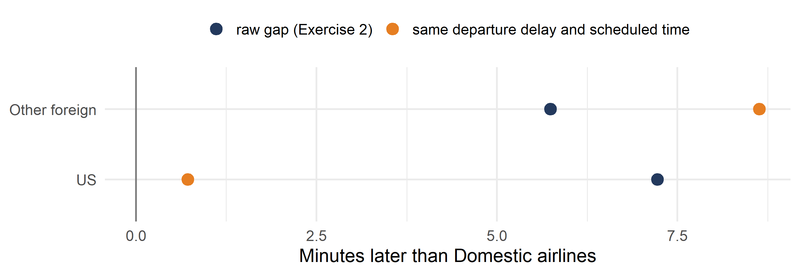
Back to the forecast. A category with many groups uses many degrees of freedom. Does it earn them?
flights$weekday has seven categories; R takes Friday, first in alphabetical order, as the reference category. That is six dummies. flights$carrier needs two.
Which raises the adjusted \(R^2\) of the week 10 forecast more: the day of the week or the airline group?
flights$arr_delay on flights$dep_delay and flights$sched_time. Note the adjusted \(R^2\).flights$weekday. Note the adjusted \(R^2\). Which days differ from Friday at 5%?weekday with carrier. Note the adjusted \(R^2\).| Regressors | Dummies | adjusted \(R^2\) |
|---|---|---|
| dep_delay + sched_time | 0 | 0.7687 |
| + weekday | 6 | 0.7692 |
| + carrier | 2 | 0.7742 |
The days add almost nothing: only Thursday (1.54 minutes, \(T = 3.57\)) and Saturday (0.95, \(T = 2.03\)) differ from Friday at 5%. The airline group, with two dummies, raises the adjusted \(R^2\) by 0.006.
Do the six days matter together, even if most are not significant one by one? That is one test of several coefficients at once: week 12.
flights$us <- (flights$carrier == "US") * 1.flights$arr_delay on two of them: other and us. Compare with Exercise 2.domestic. What does summary() print for it? Why?With two dummies the output is the same as Exercise 2. With the third, domestic shows NA: the three columns add up to the column of 1s, an exact copy, so \(\mathbf{X}\) is not full rank. One category must always be left out.
To compare every group with the US airlines, leave US out instead of Domestic. Build the dummies with arithmetic (as in the appendix exercise) and choose which two go in:
| Dummy | Minutes later than US airlines |
|---|---|
| domestic | -0.72 |
| other | 7.92 |
dep_delay and sched_time, and every forecast are unchanged. Only the reference category moves.sw holds the soft drinks and the bottled water of November 2025, one bottle at a time, up to 3 litres: 7,585 prices.
In week 10, a 0/1 regressor moved the whole line and kept its slope. Does an extra litre add the same number of pesos to a soda and to a bottle of water?
price on litres for the soda only, and then for the water only.sw$water, 1 for water and 0 for soda. Regress sw$price on sw$litres and sw$water.sw[sw$product == "soda", ] keeps the soda. (sw$product == "water") * 1 makes the 0/1 column.
Alone, soda adds 8.29 pesos per litre and water 5.95. The model with a 0/1 regressor forces one slope on both: 8.20 pesos per litre, close to the soda slope because most rows are soda.
\[\text{price}_i = \cssId{mt-i0}{\beta_0} + \cssId{mt-i1}{\beta_1}\,\text{litres}_i + \cssId{mt-i2}{\beta_2}\,\text{water}_i + \cssId{mt-i3}{\beta_3}\,(\text{litres}_i \times \text{water}_i) + u_i\]
sw$litres_water <- sw$litres * sw$water.Does an extra litre add fewer pesos to water than to soda? By how many?
sw$water and sw$litres_water, the product of sw$litres and sw$water.sw$price on sw$litres, sw$water and sw$litres_water.Soda: 8.29 pesos per litre. Water: 8.29 + (-2.34) = 5.95, the slopes of the two separate regressions. The interaction has \(T = -8.93\): an extra litre of water adds 2.34 pesos less than an extra litre of soda.
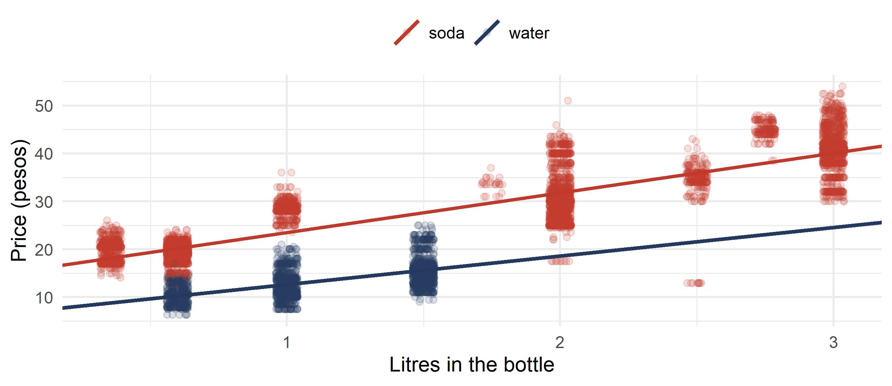
litres turns the line.Week 10 found that the national chains set national prices: municipal income barely moved the price of a soda.
wat holds the bottled water up to 1.5 litres, November 2025 to February 2026: 8,522 prices, 677 of them in local stores.
Does the price rise with municipal income in local stores, when it does not in the chains?
wat$price on wat$litres and wat$income.wat$income_local, the product of wat$income and wat$local. Regress wat$price on wat$litres, wat$income, wat$local and wat$income_local.A local store is dearer when the coefficient on local, plus the coefficient on income_local times the income, is above zero.
Alone, income moves the price by -0.036 pesos per 1,000 pesos. In a chain store: -0.046. In a local store: -0.046 + 0.339 = 0.293 pesos per 1,000 pesos of income. The interaction is significant (\(T = 5.55\)). Local stores are cheaper in poorer municipalities and dearer above about 7.9 thousand pesos: 2.68 / 0.339.
An interaction of two 0/1 regressors, and what a new tax did to prices.
Did stores pass the tax on to the shelf price? Comparing December with January is not enough: prices change in January for other reasons too.
Water pays no tax but goes through the same January. Its change shows what would have happened to soda without the tax.
tax600 holds the 600 ml bottles of soda and water in December 2025 and January 2026. tax600$group is “sugary soda”, “sugar-free soda” or “water”; tax600$after is 1 in January.
sw600 <- tax600[tax600$group != "sugar-free soda", ]. Create sw600$sugar (1 for sugary soda) and sw600$sugar_after, the product of sugar and after.sw600$price on sugar, after and sugar_after. Match each coefficient to the four means.sugar_after with the extra tax in the bottle, 1.00 peso.mean(tax600$price[tax600$group == "sugary soda" & tax600$after == 0])
mean(tax600$price[tax600$group == "sugary soda" & tax600$after == 1])
mean(tax600$price[tax600$group == "water" & tax600$after == 0])
mean(tax600$price[tax600$group == "water" & tax600$after == 1])
sw600 <- tax600[tax600$group != "sugar-free soda", ]
sw600$sugar <- (sw600$group == "sugary soda") * 1
sw600$sugar_after <- sw600$sugar * sw600$after
reg <- lm(price ~ sugar + after + sugar_after, data = sw600)
summary(reg)Water rose from 10.63 to 10.93 pesos (\(\beta_2 = 0.29\)); sugary soda from 19.32 to 21.04. The extra rise of soda is \(\beta_3 = 1.42\) pesos (\(T = 10.8\)), more than the 1.00 peso of extra tax: the stores passed on more than the tax.
| 600 ml bottle | December | January | Change |
|---|---|---|---|
| sugary soda | 19.32 | 21.04 | 1.71 |
| water | 10.63 | 10.93 | 0.29 |
| difference | 8.69 | 10.11 | 1.42 |
\[\text{price}_i = \cssId{mt-d0}{\beta_0} + \cssId{mt-d1}{\beta_1}\,\text{sugar}_i + \cssId{mt-d2}{\beta_2}\,\text{after}_i + \cssId{mt-d3}{\beta_3}\,(\text{sugar}_i \times \text{after}_i) + u_i\]
Sugar-free soda went from no tax to 1.5 pesos per litre: 1.04 peso in a 600 ml bottle, with VAT. Did the stores pass that on?
dw600 <- tax600[tax600$group != "sugary soda", ].after.The extra change for sugar-free soda is 0.75 peso (\(T = 3.9\)), less than the 1.04 peso of new tax. Sugary soda rose by more than its tax; sugar-free soda by less than its tax.
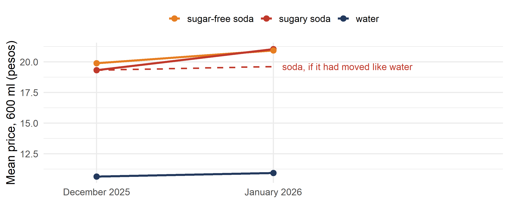